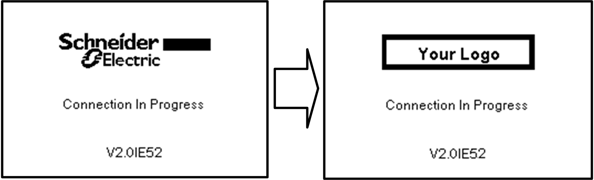

ATV dPAC Display
Overview
In EcoStruxure Automation Expert, the ATV dPAC module (VW3A3530D) allows you to display application variables on the Altivar Graphic Display Terminal (VW3A3111 only). You can customize the following elements:
-
Customizable monitoring, setting, and information screens
-
Configurable menus and sub-menus
-
Visual representation of application data using CATinstances
-
Supports multiple display templates for different data types
A Design Engineer can create the ATV HMI tree view in EcoStruxure Automation Expert. Once deployed, this view is shown on the ATV Graphic Display Terminal and can be used by the Operator.
The ATV dPAC Display feature works with these drive products:
-
Altivar Process ATV6••.
-
Altivar Process ATV9••.
-
Altivar Machine ATV340 from 75 W to 22 kW.
-
Altivar Machine ATV340•••••E from 30 kW.to 75 kW.

System Requirements
This Feature is applicable for the following system components:
|
Name |
Version |
Product reference |
|---|---|---|
|
EcoStruxure Automation Expert |
24.0.24192.04 and later. |
- |
|
ATV dPAC |
25.0.25170.00 | 3.1IE23B06 and later. |
VW3A3530D |
|
ATV Graphic Display Terminal |
All versions |
VW3A1111 |
|
ATV Language files |
1.52 and later. |
- |
|
Altivar Process ATV6•• |
4.3IE94_B02 and later. |
ATV6•• |
|
Altivar Process ATV9•• |
4.3IE94_B02 and later. |
ATV9•• |
|
Altivar Machine ATV340 |
4.3IE94_B02 and later. |
ATV340 |
All system components must be updated to the versions listed in the above table. Refer to the ATV dPAC User Guide for the firmware update procedure.
Configuration Workflow
-
Create and Map CATinstance
-
Use EcoStruxure Automation Expert to create a solution with an ATV dPAC module.
-
Configure physical/logical devices, hardware, and function blocks.
-
Link symbolic variables and deploy the solution.
-
-
Create a New Display
-
In the solution explorer, right-click the logical device under ATV dPAC Displays and select Create New Display.
-
Confirm the safety warning and name your application.
-
A display editor opens with:
-
Screens tree view
-
Template preview
-
Template configuration view
-
-
-
Add Screens and Templates
-
Right-click the display tree root to create a new screen.
-
Choose from various templates based on your data type:
-
Template Categories
-
Menu - Standard: Organize screens into categories.
-
Display - Numerical: Show a single numeric value with min/max/unit.
-
Display - Bargraph (Single/Double): Visualize one or two values with dynamic bars.
-
Display - String: Show up to two lines of text.
-
Display - Boolean: Monitor boolean values.
-
Dashboard - Mixed: Combine multiple data types on one screen.
-
Settings - Numerical/Boolean: Input interfaces for numeric or boolean values.
-
Info - Service/QR Code: Display static text or QR codes for external access.
For more detailed information, refer to EcoStruxure Automation Expert User Guide.
How to change the logo displayed when the Graphic Display Terminal turns on?

Starting from firmware version V2.0 of the graphic display terminal (VW3A1111) (it is displayed when you start the drive on the graphic display terminal), you can change the logo displayed when the Graphic Display Terminal turns on. By default, it shows the Schneider-Electric logo. To customize it:
-
Create Your Logo:
-
Design your logo and save it as a bitmap file (.bmp) named
logo_ini. -
Ensure the logo is in black & white and measures 137x32 pixels.
-
-
Connect to a Computer:
-
Use a USB cable to connect the Graphic Display Terminal to your computer.
-
-
Transfer the Logo:
-
Copy your
logo_ini.bmpfile into theKPCONFfolder on the Graphic Display Terminal.
-
When you restart the Graphic Display Terminal, your custom logo appears. If the Schneider-Electric logo still appears, check the characteristics of the file and its location.